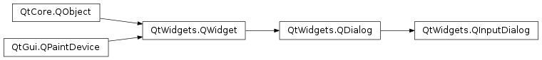

QInputDialog¶
Synopsis¶
Functions¶
- def
cancelButtonText() - def
comboBoxItems() - def
doubleDecimals() - def
doubleMaximum() - def
doubleMinimum() - def
doubleStep() - def
doubleValue() - def
inputMode() - def
intMaximum() - def
intMinimum() - def
intStep() - def
intValue() - def
isComboBoxEditable() - def
labelText() - def
okButtonText() - def
open(receiver, member) - def
setCancelButtonText(text) - def
setComboBoxEditable(editable) - def
setComboBoxItems(items) - def
setDoubleDecimals(decimals) - def
setDoubleMaximum(max) - def
setDoubleMinimum(min) - def
setDoubleRange(min, max) - def
setDoubleStep(step) - def
setDoubleValue(value) - def
setInputMode(mode) - def
setIntMaximum(max) - def
setIntMinimum(min) - def
setIntRange(min, max) - def
setIntStep(step) - def
setIntValue(value) - def
setLabelText(text) - def
setOkButtonText(text) - def
setOption(option[, on=true]) - def
setTextEchoMode(mode) - def
setTextValue(text) - def
testOption(option) - def
textEchoMode() - def
textValue()
Signals¶
- def
doubleValueChanged(value) - def
doubleValueSelected(value) - def
intValueChanged(value) - def
intValueSelected(value) - def
textValueChanged(text) - def
textValueSelected(text)
Static functions¶
- def
getDouble(parent, title, label, value, minValue, maxValue, decimals, ok, flags, step) - def
getDouble(parent, title, label[, value=0[, minValue=-2147483647[, maxValue=2147483647[, decimals=1[, flags=Qt.WindowFlags()]]]]]) - def
getInt(parent, title, label[, value=0[, minValue=-2147483647[, maxValue=2147483647[, step=1[, flags=Qt.WindowFlags()]]]]]) - def
getItem(parent, title, label, items[, current=0[, editable=true[, flags=Qt.WindowFlags()[, inputMethodHints=Qt.ImhNone]]]]) - def
getMultiLineText(parent, title, label[, text=”“[, flags=Qt.WindowFlags()[, inputMethodHints=Qt.ImhNone]]]) - def
getText(parent, title, label[, echo=QLineEdit.Normal[, text=”“[, flags=Qt.WindowFlags()[, inputMethodHints=Qt.ImhNone]]]])
Detailed Description¶
The
PySide2.QtWidgets.QInputDialogclass provides a simple convenience dialog to get a single value from the user.The input value can be a string, a number or an item from a list. A label must be set to tell the user what they should enter.
Five static convenience functions are provided:
PySide2.QtWidgets.QInputDialog.getText(),PySide2.QtWidgets.QInputDialog.getMultiLineText(),PySide2.QtWidgets.QInputDialog.getInt(),PySide2.QtWidgets.QInputDialog.getDouble(), andPySide2.QtWidgets.QInputDialog.getItem(). All the functions can be used in a similar way, for example:text = QInputDialog::getText(self, self.tr("QInputDialog().getText()"), self.tr("User name:"), QLineEdit.Normal, QDir().home().dirName(), ok) if ok and text: textLabel.setText(text)The
okvariable is set to true if the user clicks OK; otherwise, it is set to false.
The Standard Dialogs example shows how to use
PySide2.QtWidgets.QInputDialogas well as other built-in Qt dialogs.See also
PySide2.QtWidgets.QMessageBoxStandard Dialogs Example
-
class
PySide2.QtWidgets.QInputDialog([parent=nullptr[, flags=Qt.WindowFlags()]])¶ Parameters: - flags –
PySide2.QtCore.Qt.WindowFlags - parent –
PySide2.QtWidgets.QWidget
Constructs a new input dialog with the given
parentand windowflags.- flags –
-
PySide2.QtWidgets.QInputDialog.InputDialogOption¶ This enum specifies various options that affect the look and feel of an input dialog.
Constant Description QInputDialog.NoButtons Don’t display OK and Cancel buttons (useful for “live dialogs”). QInputDialog.UseListViewForComboBoxItems Use a PySide2.QtWidgets.QListViewrather than a non-editablePySide2.QtWidgets.QComboBoxfor displaying the items set withPySide2.QtWidgets.QInputDialog.setComboBoxItems().QInputDialog.UsePlainTextEditForTextInput Use a PySide2.QtWidgets.QPlainTextEditfor multiline text input. This value was introduced in 5.2.
-
PySide2.QtWidgets.QInputDialog.InputMode¶ This enum describes the different modes of input that can be selected for the dialog.
Constant Description QInputDialog.TextInput Used to input text strings. QInputDialog.IntInput Used to input integers. QInputDialog.DoubleInput Used to input floating point numbers with double precision accuracy.
-
PySide2.QtWidgets.QInputDialog.cancelButtonText()¶ Return type: unicode
-
PySide2.QtWidgets.QInputDialog.comboBoxItems()¶ Return type: list of strings
-
PySide2.QtWidgets.QInputDialog.doubleDecimals()¶ Return type: PySide2.QtCore.int
-
PySide2.QtWidgets.QInputDialog.doubleMaximum()¶ Return type: PySide2.QtCore.double
-
PySide2.QtWidgets.QInputDialog.doubleMinimum()¶ Return type: PySide2.QtCore.double
-
PySide2.QtWidgets.QInputDialog.doubleStep()¶ Return type: PySide2.QtCore.double
-
PySide2.QtWidgets.QInputDialog.doubleValue()¶ Return type: PySide2.QtCore.double
-
PySide2.QtWidgets.QInputDialog.doubleValueChanged(value)¶ Parameters: value – PySide2.QtCore.double
-
PySide2.QtWidgets.QInputDialog.doubleValueSelected(value)¶ Parameters: value – PySide2.QtCore.double
-
static
PySide2.QtWidgets.QInputDialog.getDouble(parent, title, label, value, minValue, maxValue, decimals, ok, flags, step)¶ Parameters: - parent –
PySide2.QtWidgets.QWidget - title – unicode
- label – unicode
- value –
PySide2.QtCore.double - minValue –
PySide2.QtCore.double - maxValue –
PySide2.QtCore.double - decimals –
PySide2.QtCore.int - ok –
PySide2.QtCore.bool - flags –
PySide2.QtCore.Qt.WindowFlags - step –
PySide2.QtCore.double
Return type: PySide2.QtCore.doubleThis is an overloaded function.
Static convenience function to get a floating point number from the user.
titleis the text which is displayed in the title bar of the dialog.labelis the text which is shown to the user (it should say what should be entered).valueis the default floating point number that the line edit will be set to.minandmaxare the minimum and maximum values the user may choose.decimalsis the maximum number of decimal places the number may have.stepis the amount by which the values change as the user presses the arrow buttons to increment or decrement the value.If
okis nonnull, *``ok`` will be set to true if the user pressed OK and to false if the user pressed Cancel. The dialog’s parent isparent. The dialog will be modal and uses the widgetflags.This function returns the floating point number which has been entered by the user.
Use this static function like this:
d = QInputDialog().getDouble(self, self.tr("QInputDialog().getDouble()"), self.tr("Amount:"), 37.56, -10000, 10000, 2, ok) if ok: doubleLabel.setText(QString("$%1").arg(d))
- parent –
-
static
PySide2.QtWidgets.QInputDialog.getDouble(parent, title, label[, value=0[, minValue=-2147483647[, maxValue=2147483647[, decimals=1[, flags=Qt.WindowFlags()]]]]]) Parameters: - parent –
PySide2.QtWidgets.QWidget - title – unicode
- label – unicode
- value –
PySide2.QtCore.double - minValue –
PySide2.QtCore.double - maxValue –
PySide2.QtCore.double - decimals –
PySide2.QtCore.int - flags –
PySide2.QtCore.Qt.WindowFlags
Return type: PySide2.QtCore.doubleStatic convenience function to get a floating point number from the user.
titleis the text which is displayed in the title bar of the dialog.labelis the text which is shown to the user (it should say what should be entered).valueis the default floating point number that the line edit will be set to.minandmaxare the minimum and maximum values the user may choose.decimalsis the maximum number of decimal places the number may have.If
okis nonnull, *``ok`` will be set to true if the user pressed OK and to false if the user pressed Cancel. The dialog’s parent isparent. The dialog will be modal and uses the widgetflags.This function returns the floating point number which has been entered by the user.
Use this static function like this:
d = QInputDialog().getDouble(self, self.tr("QInputDialog().getDouble()"), self.tr("Amount:"), 37.56, -10000, 10000, 2, ok) if ok: doubleLabel.setText(QString("$%1").arg(d))
- parent –
-
static
PySide2.QtWidgets.QInputDialog.getInt(parent, title, label[, value=0[, minValue=-2147483647[, maxValue=2147483647[, step=1[, flags=Qt.WindowFlags()]]]]])¶ Parameters: - parent –
PySide2.QtWidgets.QWidget - title – unicode
- label – unicode
- value –
PySide2.QtCore.int - minValue –
PySide2.QtCore.int - maxValue –
PySide2.QtCore.int - step –
PySide2.QtCore.int - flags –
PySide2.QtCore.Qt.WindowFlags
Return type: PySide2.QtCore.intStatic convenience function to get an integer input from the user.
titleis the text which is displayed in the title bar of the dialog.labelis the text which is shown to the user (it should say what should be entered).valueis the default integer which the spinbox will be set to.minandmaxare the minimum and maximum values the user may choose.stepis the amount by which the values change as the user presses the arrow buttons to increment or decrement the value.If
okis nonnull *``ok`` will be set to true if the user pressed OK and to false if the user pressed Cancel. The dialog’s parent isparent. The dialog will be modal and uses the widgetflags.On success, this function returns the integer which has been entered by the user; on failure, it returns the initial
value.Use this static function like this:
i = QInputDialog().getInteger(self, self.tr("QInputDialog().getInteger()"), self.tr("Percentage:"), 25, 0, 100, 1, ok) if ok: self.integerLabel.setText(self.tr("%1%").arg(i))
- parent –
-
static
PySide2.QtWidgets.QInputDialog.getItem(parent, title, label, items[, current=0[, editable=true[, flags=Qt.WindowFlags()[, inputMethodHints=Qt.ImhNone]]]])¶ Parameters: - parent –
PySide2.QtWidgets.QWidget - title – unicode
- label – unicode
- items – list of strings
- current –
PySide2.QtCore.int - editable –
PySide2.QtCore.bool - flags –
PySide2.QtCore.Qt.WindowFlags - inputMethodHints –
PySide2.QtCore.Qt.InputMethodHints
Return type: unicode
Static convenience function to let the user select an item from a string list.
titleis the text which is displayed in the title bar of the dialog.labelis the text which is shown to the user (it should say what should be entered).itemsis the string list which is inserted into the combo box.currentis the number of the item which should be the current item.inputMethodHintsis the input method hints that will be used if the combo box is editable and an input method is active.If
editableis true the user can enter their own text; otherwise, the user may only select one of the existing items.If
okis nonnull *a ok will be set to true if the user pressed OK and to false if the user pressed Cancel. The dialog’s parent isparent. The dialog will be modal and uses the widgetflags.This function returns the text of the current item, or if
editableis true, the current text of the combo box.Use this static function like this:
items = [self.tr("Spring"), self.tr("Summer"), self.tr("Fall"), self.tr("Winter")] item = QInputDialog().getItem(self, self.tr("QInputDialog().getItem()"), selftr("Season:"), items, 0, False, ok) if ok and not item.isEmpty(): itemLabel.setText(item)
- parent –
-
static
PySide2.QtWidgets.QInputDialog.getMultiLineText(parent, title, label[, text=""[, flags=Qt.WindowFlags()[, inputMethodHints=Qt.ImhNone]]])¶ Parameters: - parent –
PySide2.QtWidgets.QWidget - title – unicode
- label – unicode
- text – unicode
- flags –
PySide2.QtCore.Qt.WindowFlags - inputMethodHints –
PySide2.QtCore.Qt.InputMethodHints
Return type: unicode
Static convenience function to get a multiline string from the user.
titleis the text which is displayed in the title bar of the dialog.labelis the text which is shown to the user (it should say what should be entered).textis the default text which is placed in the plain text edit.inputMethodHintsis the input method hints that will be used in the edit widget if an input method is active.If
okis nonnull *a ok will be set to true if the user pressed OK and to false if the user pressed Cancel. The dialog’s parent isparent. The dialog will be modal and uses the specified widgetflags.If the dialog is accepted, this function returns the text in the dialog’s plain text edit. If the dialog is rejected, a null
PySide2.QtCore.QStringis returned.Use this static function like this:
bool ok; QString text = QInputDialog::getMultiLineText(this, tr("QInputDialog::getMultiLineText()"), tr("Address:"), "John Doe\nFreedom Street", &ok); if (ok && !text.isEmpty()) multiLineTextLabel->setText(text);- parent –
-
static
PySide2.QtWidgets.QInputDialog.getText(parent, title, label[, echo=QLineEdit.Normal[, text=""[, flags=Qt.WindowFlags()[, inputMethodHints=Qt.ImhNone]]]])¶ Parameters: - parent –
PySide2.QtWidgets.QWidget - title – unicode
- label – unicode
- echo –
PySide2.QtWidgets.QLineEdit.EchoMode - text – unicode
- flags –
PySide2.QtCore.Qt.WindowFlags - inputMethodHints –
PySide2.QtCore.Qt.InputMethodHints
Return type: unicode
Static convenience function to get a string from the user.
titleis the text which is displayed in the title bar of the dialog.labelis the text which is shown to the user (it should say what should be entered).textis the default text which is placed in the line edit.modeis the echo mode the line edit will use.inputMethodHintsis the input method hints that will be used in the edit widget if an input method is active.If
okis nonnull *a ok will be set to true if the user pressed OK and to false if the user pressed Cancel. The dialog’s parent isparent. The dialog will be modal and uses the specified widgetflags.If the dialog is accepted, this function returns the text in the dialog’s line edit. If the dialog is rejected, a null
PySide2.QtCore.QStringis returned.Use this static function like this:
text = QInputDialog::getText(self, self.tr("QInputDialog().getText()"), self.tr("User name:"), QLineEdit.Normal, QDir().home().dirName(), ok) if ok and text: textLabel.setText(text)
- parent –
-
PySide2.QtWidgets.QInputDialog.inputMode()¶ Return type: PySide2.QtWidgets.QInputDialog.InputMode
-
PySide2.QtWidgets.QInputDialog.intMaximum()¶ Return type: PySide2.QtCore.int
-
PySide2.QtWidgets.QInputDialog.intMinimum()¶ Return type: PySide2.QtCore.int
-
PySide2.QtWidgets.QInputDialog.intStep()¶ Return type: PySide2.QtCore.int
-
PySide2.QtWidgets.QInputDialog.intValue()¶ Return type: PySide2.QtCore.int
-
PySide2.QtWidgets.QInputDialog.intValueChanged(value)¶ Parameters: value – PySide2.QtCore.int
-
PySide2.QtWidgets.QInputDialog.intValueSelected(value)¶ Parameters: value – PySide2.QtCore.int
-
PySide2.QtWidgets.QInputDialog.isComboBoxEditable()¶ Return type: PySide2.QtCore.bool
-
PySide2.QtWidgets.QInputDialog.labelText()¶ Return type: unicode
-
PySide2.QtWidgets.QInputDialog.okButtonText()¶ Return type: unicode
-
PySide2.QtWidgets.QInputDialog.open(receiver, member)¶ Parameters: - receiver –
PySide2.QtCore.QObject - member – str
This is an overloaded function.
This function connects one of its signals to the slot specified by
receiverandmember. The specific signal depends on the arguments that are specified inmember. These are:PySide2.QtWidgets.QInputDialog.textValueSelected()ifmemberhas aPySide2.QtCore.QStringfor its first argument.PySide2.QtWidgets.QInputDialog.intValueSelected()ifmemberhas an int for its first argument.PySide2.QtWidgets.QInputDialog.doubleValueSelected()ifmemberhas a double for its first argument.PySide2.QtWidgets.QDialog.accepted()ifmemberhas NO arguments.
The signal will be disconnected from the slot when the dialog is closed.
- receiver –
-
PySide2.QtWidgets.QInputDialog.setCancelButtonText(text)¶ Parameters: text – unicode
-
PySide2.QtWidgets.QInputDialog.setComboBoxEditable(editable)¶ Parameters: editable – PySide2.QtCore.bool
-
PySide2.QtWidgets.QInputDialog.setComboBoxItems(items)¶ Parameters: items – list of strings
-
PySide2.QtWidgets.QInputDialog.setDoubleDecimals(decimals)¶ Parameters: decimals – PySide2.QtCore.int
-
PySide2.QtWidgets.QInputDialog.setDoubleMaximum(max)¶ Parameters: max – PySide2.QtCore.double
-
PySide2.QtWidgets.QInputDialog.setDoubleMinimum(min)¶ Parameters: min – PySide2.QtCore.double
-
PySide2.QtWidgets.QInputDialog.setDoubleRange(min, max)¶ Parameters: - min –
PySide2.QtCore.double - max –
PySide2.QtCore.double
Sets the range of double precision floating point values accepted by the dialog when used in
DoubleInputmode, with minimum and maximum values specified byminandmaxrespectively.- min –
-
PySide2.QtWidgets.QInputDialog.setDoubleStep(step)¶ Parameters: step – PySide2.QtCore.double
-
PySide2.QtWidgets.QInputDialog.setDoubleValue(value)¶ Parameters: value – PySide2.QtCore.double
-
PySide2.QtWidgets.QInputDialog.setInputMode(mode)¶ Parameters: mode – PySide2.QtWidgets.QInputDialog.InputMode
-
PySide2.QtWidgets.QInputDialog.setIntMaximum(max)¶ Parameters: max – PySide2.QtCore.int
-
PySide2.QtWidgets.QInputDialog.setIntMinimum(min)¶ Parameters: min – PySide2.QtCore.int
-
PySide2.QtWidgets.QInputDialog.setIntRange(min, max)¶ Parameters: - min –
PySide2.QtCore.int - max –
PySide2.QtCore.int
Sets the range of integer values accepted by the dialog when used in
IntInputmode, with minimum and maximum values specified byminandmaxrespectively.- min –
-
PySide2.QtWidgets.QInputDialog.setIntStep(step)¶ Parameters: step – PySide2.QtCore.int
-
PySide2.QtWidgets.QInputDialog.setIntValue(value)¶ Parameters: value – PySide2.QtCore.int
-
PySide2.QtWidgets.QInputDialog.setLabelText(text)¶ Parameters: text – unicode
-
PySide2.QtWidgets.QInputDialog.setOkButtonText(text)¶ Parameters: text – unicode
-
PySide2.QtWidgets.QInputDialog.setOption(option[, on=true])¶ Parameters: - option –
PySide2.QtWidgets.QInputDialog.InputDialogOption - on –
PySide2.QtCore.bool
Sets the given
optionto be enabled ifonis true; otherwise, clears the givenoption.See also
- option –
-
PySide2.QtWidgets.QInputDialog.setTextEchoMode(mode)¶ Parameters: mode – PySide2.QtWidgets.QLineEdit.EchoMode
-
PySide2.QtWidgets.QInputDialog.setTextValue(text)¶ Parameters: text – unicode
-
PySide2.QtWidgets.QInputDialog.testOption(option)¶ Parameters: option – PySide2.QtWidgets.QInputDialog.InputDialogOptionReturn type: PySide2.QtCore.boolReturns
trueif the givenoptionis enabled; otherwise, returns false.See also
-
PySide2.QtWidgets.QInputDialog.textEchoMode()¶ Return type: PySide2.QtWidgets.QLineEdit.EchoMode
-
PySide2.QtWidgets.QInputDialog.textValue()¶ Return type: unicode
-
PySide2.QtWidgets.QInputDialog.textValueChanged(text)¶ Parameters: text – unicode
-
PySide2.QtWidgets.QInputDialog.textValueSelected(text)¶ Parameters: text – unicode
© 2018 The Qt Company Ltd. Documentation contributions included herein are the copyrights of their respective owners. The documentation provided herein is licensed under the terms of the GNU Free Documentation License version 1.3 as published by the Free Software Foundation. Qt and respective logos are trademarks of The Qt Company Ltd. in Finland and/or other countries worldwide. All other trademarks are property of their respective owners.